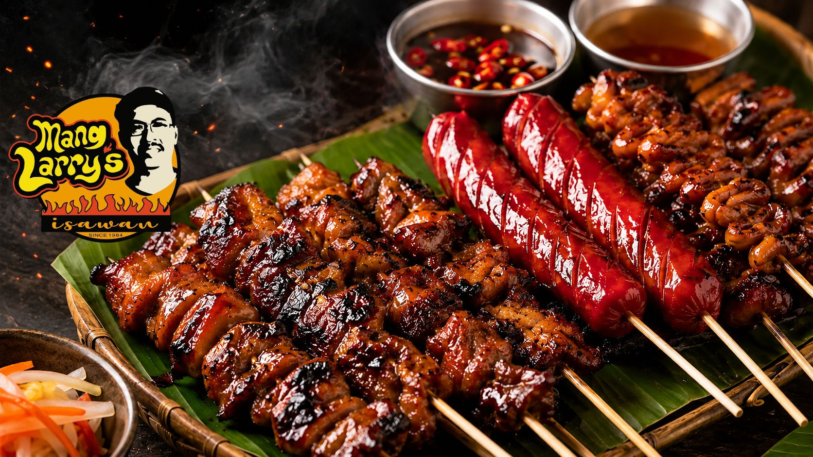
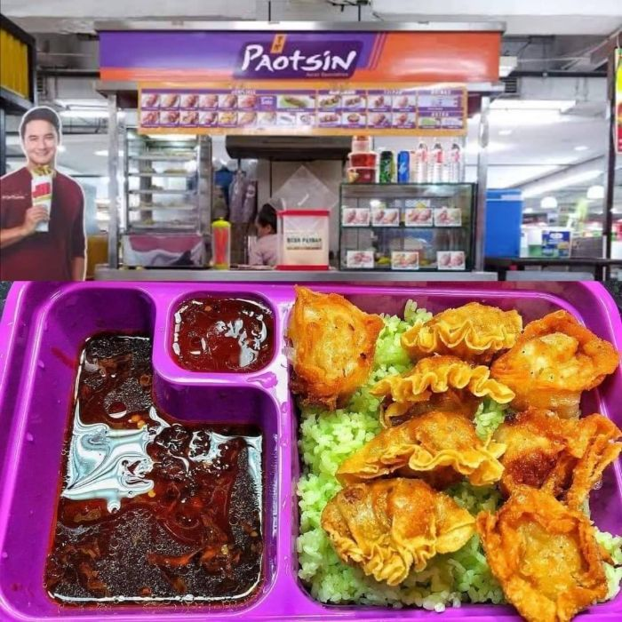

Chic-Chicken
A place where you can enjoy tasty and affordable chicken meals. Perfect for anyone looking for a satisfying meal.

A place where you can enjoy tasty and affordable chicken meals. Perfect for anyone looking for a satisfying meal.
A popular Filipino street food spot known for grilled favorites such as isaw and other delicious barbecue treats.

A budget-friendly food spot offering flavorful dumplings, rice meals, and other Filipino-inspired dishes.
